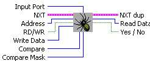

Inputs
Input Port
- This is where you select the Sensor
Port
your Sensor is
attached to.
Adrdress -Select the Adress of your PCF8574-Nx defaults are 40 and 70.
RD/WD- boolean for selecting to read or write data
Write Data- The data you write in WD mode.
Outputs
Read Data - In RD mode this is the data it reads.
Discuss Your Ideas>>